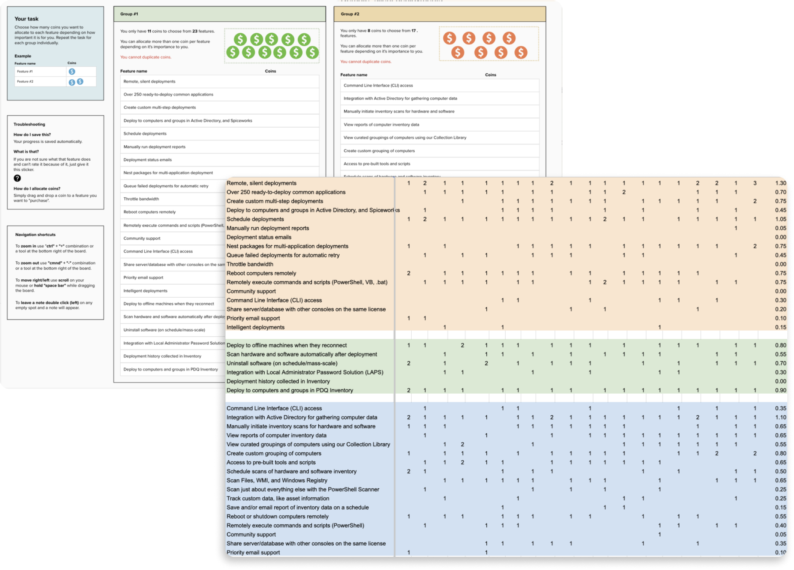

PDQ CONNECT
PDQ Connect is a SaaS solution that helps IT administrators secure their environments, streamline IT tasks, and manage software on remote devices.
PDQ Connect is a SaaS solution that helps IT administrators secure their environments, streamline IT tasks, and manage software on remote devices.
Based in Salt Lake City, PDQ Connect is a web-based device management platform specializing in agent-based device inventory and package deployment. Over the past decade, PDQ created two successful on-prem device management products. During the pandemic, the shift to remote work pushed admins to switch from on-prem to cloud management. Connect was built to address this gap for PDQ customers.
As the sole designer from the project's inception, I have been pivotal in overseeing all user experience facets from conceptual ideation through to prototype testing and final design specifications. My responsibilities include conducting all user research, creating workflows, designing interfaces, and collaborating closely with a team of 12 engineers to ensure that our solutions not only meet but exceed user expectations. This ongoing project is designed to make device management simpler, faster, and more secure for system administrators by providing real-time data and automated processes for efficient remote management.
I helped take PDQ Connect from an idea to millions in ARR. I've interviewed over 400 customers and tested many prototypes, leading to a product that's both successful and cherished by users, with a PMF score above 50.
Given the inherently unpredictable nature of a system administrator's daily responsibilities, which can range widely from routine maintenance to urgent troubleshooting, there is a critical need for a versatile tool. This tool must empower administrators to swiftly address and resolve a variety of emerging issues efficiently. Without such a solution, admins may face delays and challenges that could impact the overall productivity and security of the IT environment they manage.
1. Transition to cloud: Moving from traditional on-premises software to a cloud-based solution introduced new competition from established players in the market. This shift required us to innovate and differentiate our product.
2. Customer expectations: Our existing customers were eager to have the cloud version replicate the functionality of the on-prem tools they were used to. Meeting these expectations quickly was a significant challenge
3. Technical complexity: Designing an easy-to-use interface for a highly technical product meant finding the right balance between user-friendliness and the technical demands of the software. This required careful planning and iterative design to ensure both usability and technical robustness.
Over my years in the IT field, my understanding of user personas has significantly evolved. Initially, I viewed personas as average profiles that helped address general user needs. However, I've come to recognize the importance of the diversity among our users—each with unique backgrounds and varying priorities. To better accommodate this diversity, I developed a more inclusive approach to our user personas. This method not only captures the broad spectrum of our customer base but also serves as a constant reminder of the varied environments and challenges our users face. This refined perspective ensures our designs cater to a wider and more representative user group, enhancing the relevance and usability of PDQ Connect for all our customers.
Our research approach for PDQ Connect was dynamic and evolved as the project developed. In the early stages, our focus was on understanding the market landscape and the specific needs of our users. We conducted competitive research, surveys, and exploratory interviews to identify the core problems our product needed to address. Leveraging our existing customer base, we also conducted a prioritization exercise, using a 'coin allocation' method to determine which features were most valued and should be retained in the new solution.
As the project progressed to more recent stages, our research methods adapted to include ongoing in-app surveys and regular customer feedback sessions, ranging from five to ten per month. These sessions are crucial for identifying current pain points and understanding how users overcome specific challenges. Additionally, we routinely conduct prototype testing—ranging from five to twenty sessions per month depending on the complexity of the feature being developed—to gather immediate user feedback and refine our solutions in real-time.
Our initial goal for PDQ Connect was to design a Minimal Viable Product (MVP) that was straightforward yet versatile enough to tackle a range of administrative challenges. Through our comprehensive research, we distilled a set of core values essential for the success of the product. To ensure ease of use, we adopted a 'learning loop' approach, similar to mechanisms used in popular Nintendo games, which facilitates gradual user learning and engagement.
• Simple: Unlike many competitors that require significant time investment to learn, our product needs to be easy to use, allowing users to get started quickly without a steep learning curve.
• Flexible: Recognizing that no two organizational environments are the same, our tool needs to be able to handle a wide range of scenarios, adapting to the unique and unpredictable needs of each user.
• Fast: Speed is essential in IT management. Our product needs to ensure that IT admins can respond to urgent issues promptly, with tools that operate quickly and efficiently.
• Informative: To effectively resolve issues, IT admins need comprehensive visibility into their environments. Our product needs to provide detailed and actionable insights to empower admins to make informed decisions.
We began with three fundamental concepts: devices, packages, and deployments. Users could easily view details about their devices, choose which device required an update or intervention, create or select an existing PDQ package, and deploy it either immediately or based on specified conditions.
Over time, as we learned about where our users needed most help, our features expanded in complexity. We introduced more ways to group and organize devices, started gathering and displaying more information about devices, and added additional steps to the packaging process for more granular control. Additional deployment triggers were also implemented to better automate processes. Despite these advancements, the core learning loop—the intuitive cycle of choose devices, choose package, and deploy—remained intact, ensuring that the product's foundational ease of use was preserved even as its capabilities evolved.
In summary, the success of PDQ Connect underscores the power of continuous research and starting with a well-defined, simple feature set. This strategic approach allowed us to not only meet but exceed user expectations, facilitating a product that quickly adapted to market needs while remaining user-friendly. The robust foundation and iterative enhancements have propelled PDQ Connect's rapid growth, generating revenue well above initial projections. This success has not only solidified our position in the market but also attracted the attention of multiple private investors, signaling a strong future for the product. Through persistent innovation and a deep understanding of our users, PDQ Connect continues to evolve as a leading solution in device management, setting new standards for efficiency and ease of use in the IT management sector.